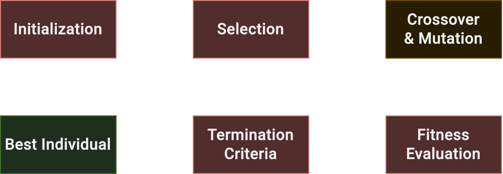
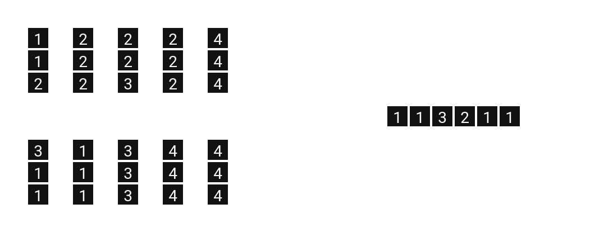

Global and Multi-Objective Optimization
Final Project
Airplane Boarding Optimization
using GA and NSGA
Scientific and Data Intensive Computing • Andrea Esposito [SM3600005]
PROBLEM and GOALS
BASED ON
Mehta, A. (2007). Novel Approaches to Airplane Boarding. UMAPJournal.
- Boarding sequence matters for boarding time
BOARDING IS A SERIAL PROCESS
- Airlines rely on quick boarding for fast turnaround
contributes to passenger satisfaction
- Economic interest imposes constraints
priority boarding, group preference, luggage...
STRATEGY AND BASELINES
- Single-objective sequence permutation problem
if applied to single seat reordering, ignoring constraints
- Common comparison baselines
widely used naive methods
- Random
no predetermined sequence
- Window-Middle-Aisle
in order to minimize seat reshuffling
- Back to Front
in order to minimize queueing
- Steffen method
Steffen, Jason H. “Optimal Boarding Method for Airline Passengers.”, 2008
Optimized WMA + B2F, evenly spacing rows
SIMULATION
simulating boarding with a simple
row-by-row stochastic process
- Every row of seats is a row processor
processing incoming passengers
- Each processor has a waiting queue
passengers standing in the space between two rows
- Upon processing, four possible actions:
- Pass
if not right row, enqueue to next processor
- Fumble
small probability of wasting a cycle
- Reshuffle (1 cycle per collision)
if correct row but collisions with seated passengers
- Stow ($n$ cycles given by Weibull distribution)
if passenger is travelling with carry-on
- Sit
finally, after everything else is dealt with
GA CYCLE

- Evaluating boarding sequence via simulation
obtaining cycles per passenger
- Objective is minimized
smaller fitness = shorter boarding time
- Termination on number of evolved generations
usually 2048 generations
- Cycle crossover and swap mutation
preserving sequence validity
GA PARAMETERS
- Implementation in C++
with parallel fitness evaluation using openmp
- Population size of $128$
in line with papers
- Sequence of $180$ passengers in $30$ rows
the seat configuration of most narrow-body aircraft
- Evolution of $1024$ generations
over multiple conditions
- $p_{cross} = 0.1$, $p_{mut} \in [0.1, .., 0.9]$
investigating the best parameter configuration
TOWARDS GROUP BOARDING
- Good results possible
better than known baselines
- Unrealistic setting
infeasible in a real scenario
- Hard constraint: boarding groups
practical feasibility and economic interest

GROUP BOARDING

- Similar setting to GA
same evolution loop
- Population is now a sequence of group assignments
each gene is a specific seat, assigned to a boarding group
- Fitness evaluation rebuilds the sequence
ordering by group, shuffling within each group
- One-point crossover and swap mutation
no permutation validity constraint
LUGGAGE-FIRST POLICY
- $32$ runs of fully evolved population
evaluating a population with a predetermined luggage distribution
- $~90\%$ of carry-on carriers boarded first
in line with airline policies
HOW MANY BOARDING GROUPS?
- Keeping low number of boarding groups
easier logistics, passenger satisfaction
- Minimizing boarding time
faster boarding, better turnaround time
- Good PoC for multi-objective optimization
although few boarding groups configurations
- NSGA II
well suited for optimizing two objectives
2-GROUP GA RESULTS
- $N = 8$ maximum number of groups
for a more realistic setting
- Same setting as group GA
rebuilding sequence from group assignments
- Roughly $25\%$ boarding with $8$ groups wrt $2$
confirming faster boarding hypothesis
CONCLUSIONS
- Good results with GA
optimizing passenger sequence
- Better than theoretical baselines
while practically infeasible
- EA for better trade-offs
optimizing other objectives with constraints
- Different encodings and algorithms
e.g. rule-based (GP, policy optimization...)
THANK YOU FOR YOUR ATTENTION